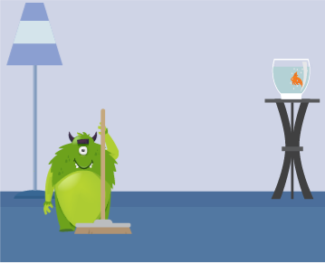

<p-panel header="עצמאות בבית" [toggleable]="true">
  
  {{content}}
</p-panel>
<div class="tasks-buttons">
  <button pButton *ngFor="let task of tasks" (click)="doTask(task)" type="button" label="{{task}}" icon="fa-check" iconPos="left"></button>
</div>

